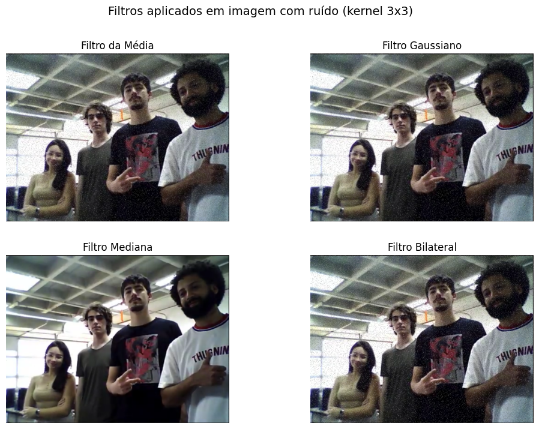

Introdução
Este relatório tem como objetivo conhecer os comandos para filtragem de imagens.
Materiais e Métodos
Foi utilizado o seguinte código para aplicar filtros na mesma imagem tirada através de uma webcam no laboratório. Os filtros aplicados foram Kernel 3x3, 5x5, 7x7, 11x11 para a imagem sem ruído e com ruído pimenta.
#include <iostream>
#include "opencv2/imgproc.hpp"
#include "opencv2/imgcodecs.hpp"
#include "opencv2/highgui.hpp"
using namespace std;
using namespace cv;
int DELAY_CAPTION = 1500;
int DELAY_BLUR = 100;
int MAX_KERNEL_LENGTH = 31;
Mat src; Mat dst;
char window_name[] = "Smoothing Demo";
int display_caption( const char* caption );
int display_dst( int delay );
int main( int argc, char ** argv )
{
namedWindow( window_name, WINDOW_AUTOSIZE );
const char* filename = argc >=2 ? argv[1] : "lena.jpg";
src = imread( samples::findFile( filename ), IMREAD_COLOR );
if (src.empty())
{
printf(" Error opening image\n");
printf(" Usage:\n %s [image_name-- default lena.jpg] \n", argv[0]);
return EXIT_FAILURE;
}
if( display_caption( "Original Image" ) != 0 )
{
return 0;
}
dst = src.clone();
if( display_dst( DELAY_CAPTION ) != 0 )
{
return 0;
}
if( display_caption( "Homogeneous Blur" ) != 0 )
{
return 0;
}
for ( int i = 1; i < MAX_KERNEL_LENGTH; i = i + 2 )
{
blur( src, dst, Size( i, i ), Point(-1,-1) );
if( display_dst( DELAY_BLUR ) != 0 )
{
return 0;
}
}
if( display_caption( "Gaussian Blur" ) != 0 )
{
return 0;
}
for ( int i = 1; i < MAX_KERNEL_LENGTH; i = i + 2 )
{
GaussianBlur( src, dst, Size( i, i ), 0, 0 );
if( display_dst( DELAY_BLUR ) != 0 )
{
return 0;
}
}
if( display_caption( "Median Blur" ) != 0 )
{
return 0;
}
for ( int i = 1; i < MAX_KERNEL_LENGTH; i = i + 2 )
{
medianBlur ( src, dst, i );
if( display_dst( DELAY_BLUR ) != 0 )
{
return 0;
}
}
if( display_caption( "Bilateral Blur" ) != 0 )
{
return 0;
}
for ( int i = 1; i < MAX_KERNEL_LENGTH; i = i + 2 )
{
bilateralFilter ( src, dst, i, i*2, i/2 );
if( display_dst( DELAY_BLUR ) != 0 )
{
return 0;
}
}
display_caption( "Done!" );
return 0;
}
int display_caption( const char* caption )
{
dst = Mat::zeros( src.size(), src.type() );
putText( dst, caption,
Point( src.cols/4, src.rows/2),
FONT_HERSHEY_COMPLEX, 1, Scalar(255, 255, 255) );
return display_dst(DELAY_CAPTION);
}
int display_dst( int delay )
{
imshow( window_name, dst );
int c = waitKey ( delay );
if( c >= 0 ) { return -1; }
return 0;
}
Resultados e Análises

Pelos resultados obtidos, percebemos que:
1. Filtro da Média
Variação com o tamanho do Kernel: Kernel pequeno (3×3) tem a suavização leve, mantém alguns detalhes.
Kernel grande (11×11) tem a suavização forte, mas a imagem perde nitidez e definição.
Com ruído sal e pimenta: o ruído contém pixels pretos e brancos e a média não consegue eliminá-los totalmente.
2. Filtro Gaussiano
Variação com o tamanho do kernel: Quanto maior o kernel maior a suavização, mas a suavização é menor que o filtro da média.
Com ruído sal e pimenta: O Gaussiano melhora um pouco, os pontos brancos e pretos aparecem mais que o filtro anterior.
3. Filtro da Mediana
Variação com o tamanho do kernel: O Kernel pequeno (3×3) remove ruído leve. O Kernel grande (7×7 ou 11×11): remove mais ruído, mas começa a borrar algumas regiões.
Com ruído sal e pimenta: É o melhor filtro para esse tipo de ruído, remove quase todos os pontos de ruído, mantendo contornos nítidos.
4. Filtro Bilateral
Variação com o tamanho do kernel: Kernels maiores tornam o efeito de suavização mais evidente, mas mantêm bordas mais definidas que os outros filtros.
Com ruído sal e pimenta: Funciona razoavelmente bem, mas não tanto quanto o filtro da mediana.
Conclusões e Comentários Finais
A partir da aplicação dos diferentes filtros de suavização — média, gaussiano, mediana e bilateral — com variados tamanhos de kernel (3×3, 5×5, 7×7 e 11×11), foi possível observar de forma clara como cada técnica atua na redução de ruídos e na preservação dos detalhes da imagem.
De maneira geral, verificou-se que o aumento do tamanho do kernel provoca uma suavização mais intensa, reduzindo significativamente o ruído, porém com o custo de perda de nitidez e definição dos contornos. Kernels menores (como 3×3) mantêm mais detalhes, enquanto kernels maiores (como 11×11) deixam a imagem mais borrada.
Em imagens com ruído sal e pimenta, o filtro da mediana é claramente o mais eficaz.
O estudo evidencia que a escolha do filtro e do tamanho do kernel deve considerar o tipo de ruído e o objetivo da filtragem, buscando sempre o equilíbrio entre a suavização desejada e a preservação das características visuais originais da imagem.